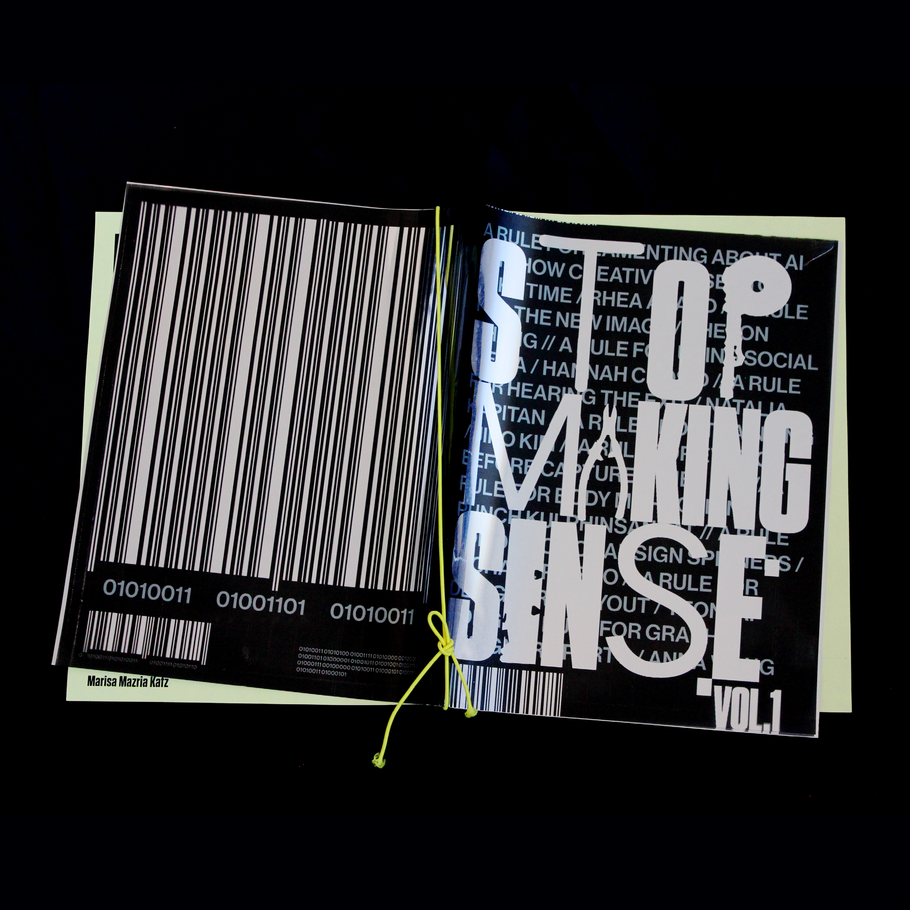
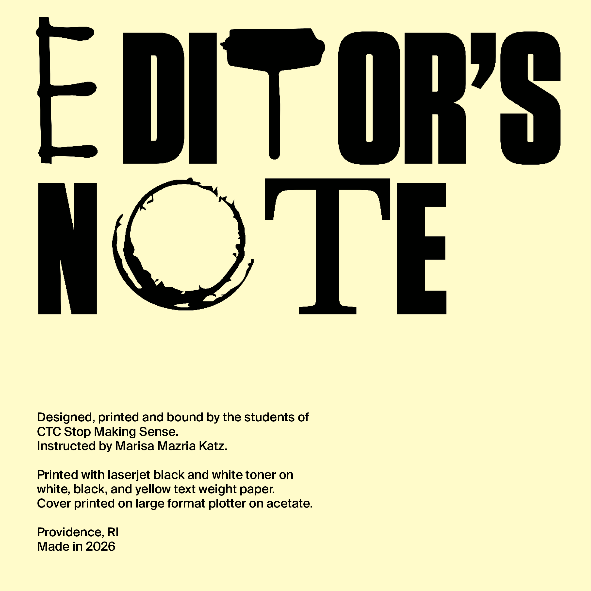
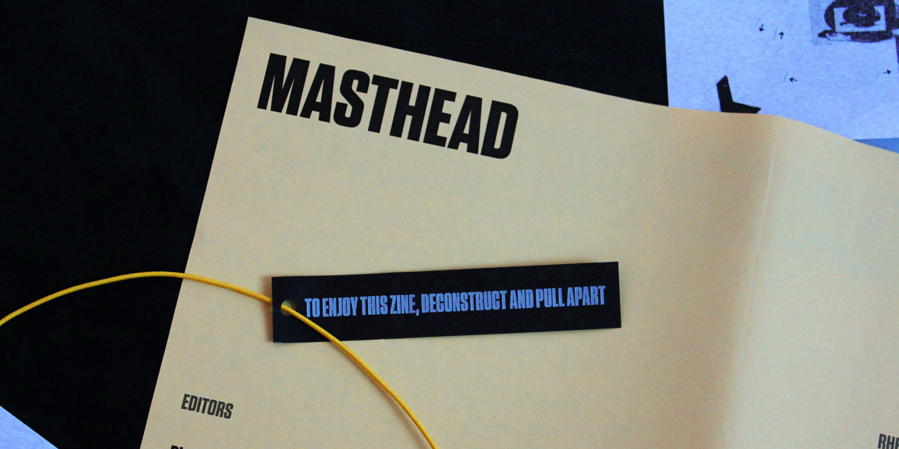

STOP MAKING SENSE
Shaping the first edition of the Stop Making Sense zine.
editor in chief | creative direction
collaborators Dietrich He, Natalie Ho, Kiry Kim, Neat Rodanant
guided by Marisa Mazria Katz
Preparing for the future of art and technology, the Rhode Island School of Design’s Computation, Technology, and Culture concentration offered a new course, Stop Making Sense, taught by arts and politics journalist Marisa Mazria Katz. The class featured a selection of guest speakers educated in the intersection between art and technology, and at its conclusion produced the first edition of the zine of the same name.
In the class of twenty students, I worked as Editor in Chief to lead the creative direction of the project, collaborating with the designers to publish a punchy, futuristic, and one-of-a-kind zine.



Many thanks to the amazing roster of guest speakers that formed and inspired the Stop Making Sense class.